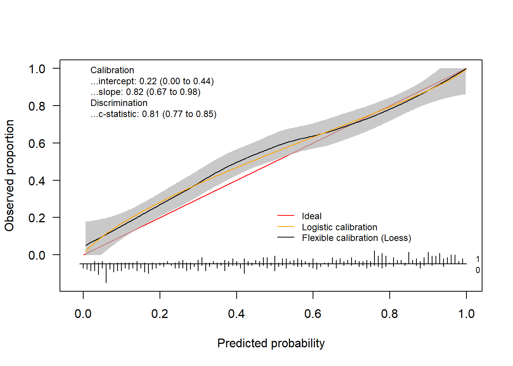
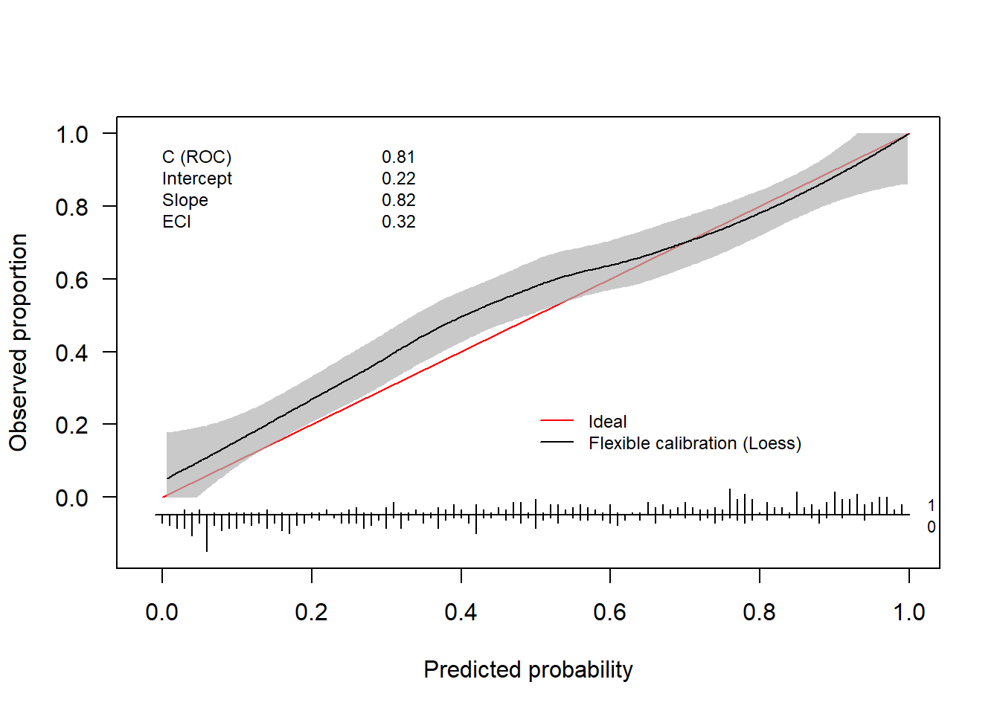
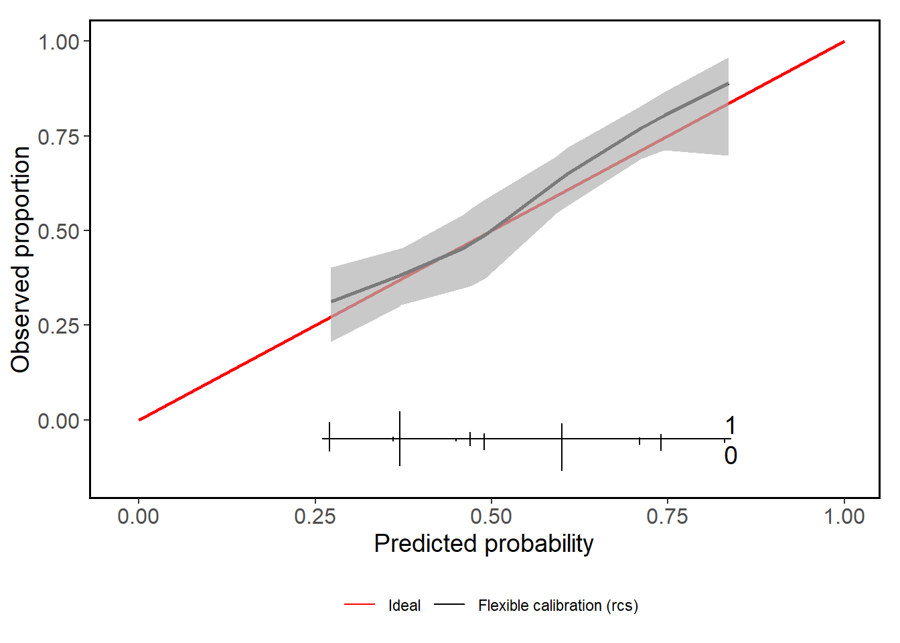
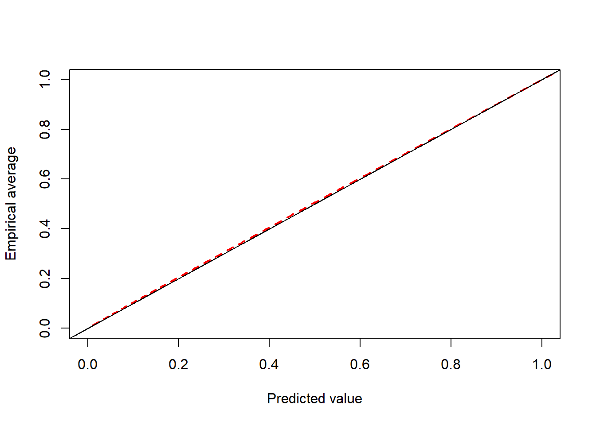

Introduction to the CalibrationCurves package
Bavo De Cock Campo
2025-07-04
CalibrationCurves.Rmd
In this document, we give you a brief overview of the basic functionality of the CalibrationCurves package. In addition, we present the theoretical framework behind calibration and provide some illustrative examples to give the reader a better insight into the calibration assessment of a predictive model. We advise you to also consult the help-pages of the functions to get an exhaustive overview of the functionality.
We tried to tailor the explanation of the concepts to professionals with different backgrounds. Please, do contact me if you feel that something is unclear so that I can adjust (and hopefully improve) it. In addition, don’t hesitate to send any suggestions you might have and bug reports to the package author.
1 Assessing the performance of risk prediction models
1.1 Risk prediction models
In this package, we focus on risk prediction models that estimate the probability \(\pi_i\) of observing an event. We use \(y_i \in (0, 1)\) to denote the variable that captures this outcome which takes on the value 0 in case of a non-event and 1 in case of an event. Here, \(i\) serves as an index for the observations (mostly the patient within medical predictive analytics) with \(i = (1, \dots, n)\) and where \(n\) denotes the total number of observations. We assume that the response variable \(y_i\) follows a Bernoulli distribution \(y_i \sim \text{Bern}(\pi_i)\).
For example, we could be interested in estimating the probability \(\pi_i\) of observing a malignant tumour for patient \(i\). In this case, the event \(y_i = 1\) is the tumour being malignant and \(y_i = 0\) when the tumour is benign. With no available information on the patient characteristics, we might rely on the prevalence in the general population to estimate this probability.
Using risk prediction models, we model the outcome as a function of the observed risk/patient characteristics. The risk characteristics are contained in the covariate vector \(\boldsymbol{x}_i\). This vector contains all observed information for patient \(i\) (e.g. maximum diameter of the lesion, proportion of solid tissue, …). This allows us to obtain a more accurate prediction that is based on the relation between the patient characteristics and the outcome. To construct a clinical prediction model, we either rely on a statistical models such as logistic regression or machine learning methods. A general expression that encompasses both types of models is \[\begin{align*} E[y_i | \boldsymbol{x}_i] = f(\boldsymbol{x}_i). \end{align*}\] This expression states that we model the response \(y_i\) as a function of the observed risk characteristics \(\boldsymbol{x}_i\).
1.1.1 Mathematical details on existing predictive models
To construct a risk prediction model, we could rely on a logistic regression model \[\begin{align*} E[y_i | \boldsymbol{x}_i] = \pi_i(\boldsymbol{\beta}) = \frac{e^{\boldsymbol{x}_i^\top \boldsymbol{\beta}}}{1 + e^{\boldsymbol{x}_i^\top \boldsymbol{\beta}}} \end{align*}\] where \(\boldsymbol{\beta}\) denotes the parameter vector. \(\pi_i(\boldsymbol{\beta}) = P(y_i = 1| \boldsymbol{x}_i)\) denotes the probability of observing the event, given the covariate vector \(\boldsymbol{x}_i\). We can rewrite the equation to its more well-known form \[\begin{align*} \log\left( \frac{\pi_i(\boldsymbol{\beta})}{1 - \pi_i(\boldsymbol{\beta})} \right) &= \boldsymbol{x}_i^\top \boldsymbol{\beta}\\[0.5em] \text{logit}(\pi_i(\boldsymbol{\beta})) &= \eta_i \end{align*}\] where \(\eta_i\) denotes the linear predictor. Here, we have the well-known logit function at the left side of the equation.
With machine learning methods, \(f(\cdot)\) depends on the specific algorithm. With tree-based methods, for example, this correspond to the observed proportion in the leaf nodes. For neural networks, \(f(\cdot)\) is determined by the weights in the layers and the chosen activation functions.
1.2 Different aspects of the predictive performance
To assess how well the model is able to predict (the probability of) the outcome, we assess two different aspects of the model (Van Calster et al. 2016, 2019; Alba et al. 2017):
- discrimination;
- calibration.
With discrimination, we refer to the model’s ability to differentiate between observations that have the event and observations that have not. In this context, this translates to giving higher risk estimates for patients with the event than patients without the event. We commonly assess this using the area under the receiver operating characteristic curve. However, discrimination performance does not tell us how accurate the predictions are. The estimated risk may result in good discrimination and can be inaccurate at the same time. We refer to the accuracy of the predictions as the calibration. Hence, hereby we assess the agreement between the estimated and observed number of events (Van Calster et al. 2016). We say that a prediction model is calibrated if the predicted risks correspond to the observed proportions of the event.
1.3 Assessing the calibration performance of a risk prediction model
1.3.1 A mathematical perspective
One way to examine the calibration of risk predictions, is by using calibration curves (Van Calster et al. 2016, 2019; Steyerberg 2019; De Cock Campo 2023). A calibration curve maps the predicted probabilities \(f(\boldsymbol{x}_i)\) to the actual event probabilities \(P(y_i = 1| f(\boldsymbol{x}_i))\) and visualizes the correspondence between the model’s predicted risks and the true probabilities. For perfectly calibrated predictions, the calibration curve equals the diagonal, i.e. \(P(y_i = 1 | f(\boldsymbol{x}_i)) = f(\boldsymbol{x}_i) \ \forall \ i\) where \(\forall \ i\) denotes for all \(i\).
1.3.2 A practical perspective
In practice, we typically assess the model’s calibration on a validation set. In this setting, a calibration curve visualizes the correspondence between the model’s predicted risks and the observed proportion. When we have a perfect agreement between the observed and predicted proportion the calibration curve coincides with the ideal curve (a diagonal line). This scenario is visualized in Figure 1.1.
Figure 1.1: Example of a perfectly calibrated model

By assessing the calibration performance on a data set other than the training set, we obtain an indication of how well our risk prediction is able to generalize to other data sets and how accurate its out-of-sample predictions are. In general, the prediction model will show some miscalibration and the calibration curve gives us a visual depiction of how badly the model is miscalibrated. The further from the diagonal line, the worse the calibration. Figure 1.2 depicts an example of a model that is miscalibrated and is a typical example of a model that is overfitted to the training data. This particular model has predictions that are too extreme: high risks are overestimated and low risks are underestimated.
Figure 1.2: Example of a miscalibrated model due to overfitting

Its counterpart, an underfitted model, occurs less frequently. 1.3 shows the calibration curve of an underfitted model. Here, there is an overestimation for the low risks and an underestimation for the high risks.
Figure 1.3: Example of a miscalibrated model due to underfitting

1.3.3 How do we construct a calibration curve?
Fitting a logistic regression model to the training data results in an estimate for the parameter vector \(\boldsymbol{\beta}\), which we denote as \(\widehat{\boldsymbol{\beta}}\). The latter contains the estimated effects of the included covariates (e.g. proportion of solid tissue). To obtain a risk estimate for patient \(i\), we multiply the covariate vector \(\boldsymbol{x}_i\) (which contains all the patient-specific characteristics) with the estimated parameter vector \(\widehat{\boldsymbol{\beta}}\) to obtain the linear predictor \(\widehat{\eta}_i\) \[\begin{align*} \widehat{\eta}_i = \boldsymbol{x}_i^\top \widehat{\boldsymbol{\beta}}. \end{align*}\]
To differentiate between the training and test set, we append the subscript \(*\) to the quantities of the test set. Hence, \({}_{*} y_i\) denotes the outcome in the test set. Similarly, we use \({}_{*} \boldsymbol{x}_i\) to denote the covariate vector for patient \(i\) in the test set. We then calculate the linear predictor on the test set as \[\begin{align*} {}_{*} \widehat{\eta}_i = {}_{*} \boldsymbol{x}_i^\top \widehat{\boldsymbol{\beta}} \tag{1}. \end{align*}\]
Similarly, we can predict the probability \(\widehat{f}({}_{*} \boldsymbol{x}_i)\) for patient \(i\) in the test set using machine learning methods. We use \[\begin{align*} {}_{*} \widehat{\pi}_i = \widehat{f}({}_{*} \boldsymbol{x}_i) \end{align*}\] as a general notation to denote the predicted probability of the risk prediction model.
One way to compute the calibration curve, is by using a logistic regression model \[\begin{align*} \text{logit}(P({}_{*} y_i = 1| {}_{*} \widehat{\pi}_i)) &= \alpha + \zeta \ \text{logit}({}_{*} \widehat{\pi}_i) \tag{1.1} \end{align*}\] where we estimate the observed proportions as a function of the predicted probabilities. This model fit yields a logistic calibration curve. Note that \(\text{logit}({}_{*} \widehat{\pi}_i) = {}_{*} \widehat{\eta}_i\) when \({}_{*} \widehat{\pi}_i\) is estimated using a logistic regression model (see (1.1)).
Alternatively, we can obtain flexible, nonlinear calibration curve using a non-parametric smoother such as loess or restricted cubic splines. In our package, we provide both types of calibration curves.
1.3.4 Calibration intercept and slope
In addition to the calibration curve, we have two measures that summarize different aspects of the calibration performance:
- the calibration intercept \(\alpha_c\) (calibration-in-the-large);
- the calibration slope \(\zeta\).
We have a perfectly calibrated model when the calibration curve coincides with the diagonal line or when \(\alpha =\alpha_c = 0\) and \(\zeta = 1\).
To compute the calibration slope \(\zeta\), we rely on the model used to obtain the logistic calibration curve (see equation (1.1)). The value of the calibration slope \(\zeta\) tells us whether the model is over- or underfitted. When \(\zeta < 1\) the model is overfitted. \(\zeta < 1\) indicates that \({}_{*} \eta_i\) is too extreme and needs to be lower to ensure that the predicted risks coincide with the observed risks. Conversely, we have a model that is underfitted when \(\zeta > 1\).
To calculate the calibration intercept or calibration-in-the-large, we fix the calibration slope at \(1\) and denote this as \(\alpha|\zeta = 1\) or the short-hand notation \(\alpha_c\). To estimate \(\alpha_c\), we fit the model \[\begin{align*} \text{logit}(P({}_{*} y_i = 1| {}_{*} \widehat{\pi}_i)) &= \alpha_c + \text{offset}(\text{logit}({}_{*} \widehat{\pi}_i)) \tag{1.2} \end{align*}\] where we enter \(\text{logit}({}_{*} \widehat{\pi}_i)\) as an offset variable. Hereby, we fix \(\zeta = 1\). The calibration intercept tells us whether the risks are overestimated \((\alpha_c < 0)\) or underestimated \((\alpha_c > 0)\) on average.
1.4 Illustration of the CalibrationCurves package
1.4.1 Training the model
To illustrate the functionality, the package has two example data sets: traindata and testdata. These are two synthetically generated data sets (using the same underlying process/settings to generate the data) to illustrate the functionality of the CalibrationCurves package.
The traindata data frame represents the data that we will use to develop our risk prediction model
library(CalibrationCurves)
#> Loading required package: rms
#> Loading required package: Hmisc
#> Warning: package 'Hmisc' was built under R version 4.4.2
#>
#> Attaching package: 'Hmisc'
#> The following objects are masked from 'package:base':
#>
#> format.pval, units
#> Loading required package: ggplot2
data("traindata")In this data frame, we have four covariates and one response variable y.
head(traindata)
#> y x1 x2 x3 x4
#> 1 0 -0.19981624 0.2982990 1.0277486 -0.1146414
#> 2 1 -1.37127488 0.5940002 -0.8234645 2.0927676
#> 3 1 1.04050541 0.5440481 -1.3576457 1.3126813
#> 4 0 -1.11652476 -0.5382577 -1.1651439 1.0987873
#> 5 1 1.39659613 1.1325081 0.6053029 -1.0598506
#> 6 0 -0.04645095 -0.8167364 1.0196761 -0.4867560Next, we fit a logistic regression model to obtain the estimated parameter vector \(\widehat{\beta}\).
glmFit = glm(y ~ . , data = traindata, family = binomial)
summary(glmFit)
#>
#> Call:
#> glm(formula = y ~ ., family = binomial, data = traindata)
#>
#> Coefficients:
#> Estimate Std. Error z value Pr(>|z|)
#> (Intercept) 0.08915 0.08016 1.112 0.266
#> x1 0.60585 0.08475 7.148 8.79e-13 ***
#> x2 1.38035 0.10554 13.079 < 2e-16 ***
#> x3 -0.75109 0.08854 -8.483 < 2e-16 ***
#> x4 0.82757 0.08759 9.448 < 2e-16 ***
#> ---
#> Signif. codes: 0 '***' 0.001 '**' 0.01 '*' 0.05 '.' 0.1 ' ' 1
#>
#> (Dispersion parameter for binomial family taken to be 1)
#>
#> Null deviance: 1385.89 on 999 degrees of freedom
#> Residual deviance: 950.28 on 995 degrees of freedom
#> AIC: 960.28
#>
#> Number of Fisher Scoring iterations: 51.4.2 Assessing the calibration performance
Hereafter, we assess the calibration performance on the testdata set. Hereto, we first have to compute the predicted probabilities on this data set.
We then store the response in the testdata in a separate vector yTest.
yTest = testdata$yNow we have everything we need to assess the calibration performance of our prediction model. We can either use val.prob.ci.2 or valProbggplot to visualize the calibration performance and to obtain the statistics. val.prob.ci.2 makes the plot using base R and valProbggplot uses the ggplot2 package.
By default, the flexible calibration curve (based on a loess smoother) will be plotted.
calPerf = val.prob.ci.2(pHat, yTest)
In addition to the plot, the function returns an object of the class CalibrationCurve.
calPerf
#> Call:
#> val.prob.ci.2(p = pHat, y = yTest)
#>
#> A 95% confidence interval is given for the calibration intercept, calibration slope and c-statistic.
#>
#> Dxy C (ROC) R2 D D:Chi-sq D:p
#> 0.62853462 0.81426731 0.38019823 0.33282644 167.41322219 0.00000000
#> U U:Chi-sq U:p Q Brier Intercept
#> 0.01286390 8.43195136 0.01475792 0.31996254 0.17703339 0.22404680
#> Slope Emax Brier scaled Eavg ECI
#> 0.82278297 0.08288689 0.28730517 0.04747448 0.32064056This object contains the calculated statistics as well as the calculated coordinates of the calibration curve.
str(calPerf)
#> List of 7
#> $ call : language val.prob.ci.2(p = pHat, y = yTest)
#> $ stats : Named num [1:17] 0.629 0.814 0.38 0.333 167.413 ...
#> ..- attr(*, "names")= chr [1:17] "Dxy" "C (ROC)" "R2" "D" ...
#> $ cl.level : num 0.95
#> $ Calibration :List of 2
#> ..$ Intercept: Named num [1:3] 0.22405 0.00339 0.4447
#> .. ..- attr(*, "names")= chr [1:3] "Point estimate" "Lower confidence limit" "Upper confidence limit"
#> ..$ Slope : Named num [1:3] 0.823 0.666 0.98
#> .. ..- attr(*, "names")= chr [1:3] "Point estimate" "Lower confidence limit.2.5 %" "Upper confidence limit.97.5 %"
#> $ Cindex : Named num [1:3] 0.814 0.774 0.848
#> ..- attr(*, "names")= chr [1:3] "Point estimate" "Lower confidence limit" "Upper confidence limit"
#> $ warningMessages : NULL
#> $ CalibrationCurves:List of 1
#> ..$ FlexibleCalibration:'data.frame': 500 obs. of 4 variables:
#> .. ..$ x : num [1:500] 0.00561 0.00651 0.00706 0.01183 0.01235 ...
#> .. ..$ y : num [1:500] 0.0504 0.0514 0.052 0.0572 0.0578 ...
#> .. ..$ ymin: num [1:500] 0 0 0 0 0 0 0 0 0 0 ...
#> .. ..$ ymax: num [1:500] 0.177 0.177 0.177 0.179 0.179 ...
#> - attr(*, "class")= chr "CalibrationCurve"The coordinates are stored in the CalibrationCurves slot and can be extracted as follows.
flexCal = calPerf$CalibrationCurves$FlexibleCalibration
plot(flexCal[, 1:2], type = "l", xlab = "Predicted probability", ylab = "Observed proportion", lwd = 2, xlim = 0:1, ylim = 0:1)
polygon(
x = c(flexCal$x, rev(flexCal$x)),
y = c(
flexCal$ymax,
rev(flexCal$ymin)
),
col = rgb(177, 177, 177, 177, maxColorValue = 255),
border = NA
)Alternatively, we can use restricted cubic splines to obtain the flexible calibration curve.
rcsFit = tryCatch(val.prob.ci.2(pHat, yTest, smooth = "rcs"),
error = function(e) TRUE)
if(is.logical(rcsFit)) {
plot(1, type = "n", xlab = "", ylab = "", xlim = c(0, 10), ylim = c(0, 10))
text(x = 5, y = 5, labels = paste0("There was a problem estimating\n",
"the calibration curve using rcs"), cex = 2)
} else {
rcsFit
}
#> Call:
#> val.prob.ci.2(p = pHat, y = yTest, smooth = "rcs")
#>
#> A 95% confidence interval is given for the calibration intercept, calibration slope and c-statistic.
#>
#> Dxy C (ROC) R2 D D:Chi-sq D:p
#> 0.62853462 0.81426731 0.38019823 0.33282644 167.41322219 0.00000000
#> U U:Chi-sq U:p Q Brier Intercept
#> 0.01286390 8.43195136 0.01475792 0.31996254 0.17703339 0.22404680
#> Slope Emax Brier scaled
#> 0.82278297 0.08288689 0.28730517We obtain the logistic calibration curve using the following code.
invisible(val.prob.ci.2(pHat, yTest, logistic.cal = TRUE, smooth = "none"))We can plot both using
invisible(val.prob.ci.2(pHat, yTest, logistic.cal = TRUE, col.log = "orange"))
The package also allows to change the colors, change the position of the legend and much more. Check out the help-function to see what other arguments the functions have.
invisible(val.prob.ci.2(pHat, yTest, col.ideal = "black", col.smooth = "red", CL.smooth = TRUE,
legendloc = c(0, 1), statloc = c(0.6, 0.25)))Finally, we can also decide which statistics appear on the plot.
invisible(val.prob.ci.2(pHat, yTest, dostats = c("C (ROC)", "Intercept", "Slope", "ECI")))
1.4.3 ggplot version
The ggplot version (i.e.valProbggplot) uses virtually the same arguments. Hence, we can easily obtain a ggplot using the same code.
valProbggplot(pHat, yTest)#> Call:
#> valProbggplot(p = pHat, y = yTest)
#>
#> A 95% confidence interval is given for the calibration intercept, calibration slope and c-statistic.
#>
#> Dxy C (ROC) R2 D D:Chi-sq D:p
#> 0.62853462 0.81426731 0.38019823 0.33282644 167.41322219 0.00000000
#> U U:Chi-sq U:p Q Brier Intercept
#> 0.01286390 8.43195136 0.01475792 0.31996254 0.17703339 0.22404680
#> Slope Emax Brier scaled Eavg ECI
#> 0.82278297 0.08288689 0.28730517 0.04747448 0.320640562 Assessing the performance of survival models
2.1 Cox Proportional hazards model
The Cox proportional hazards model is a widely used method for analyzing survival data. It estimates the hazard function, which represents the instantaneous risk of an event occurring at time \(t\), given that the subject has survived up to \(t\). For patient \(i\) with covariate vector \(\boldsymbol{x}_i\), the hazard function is given by:
\[\begin{align*} h(t | \boldsymbol{x}_i) &= h_0(t) \exp(\boldsymbol{x}_i^\top \beta)\\ &= h_0(t) \exp(\eta_i) \end{align*}\]
where
- \(h(t | \boldsymbol{x}_i)\) is the hazard function at time \(t\) for subject \(i\),
- \(h_0(t)\) is the baseline hazard function at time \(t\), which is shared by all individuals.
In this model, the survival probability for an individual \(i\) at time \(t\) is given by
\[ S_i(t) = \exp\left(-H_i(t)\right) \]
where \(H_i(t)\) is the cumulative hazard function:
\[ H_i(t) = H_0(t) \exp( \eta_i) \]
where \(H_0(t)\) is the baseline cumulative hazard function.
2.1.1 Calibration Curve
We can estimate the calibration curve in this scenario by entering the linear predictor \(\eta_i\) as a covariate
\[\begin{align*}
h(t | {}_{*} \eta_i) &= h_0(t) \exp(\zeta {}_{*} \eta_i)\\
\end{align*}\]
where \(\zeta\) is the calibration slope that quantifies the relationship between the predicted and observed hazards. Similarly to (1.1), \(\zeta\) indicates whether the model is over- (\(\zeta < 1\)) or underfitted (\(\zeta >1\)). Note that we do not have a calibration intercept in this model. This is because the baseline hazard function \(h_0(t)\) is not estimated in the Cox model, and the model is only identified up to a proportionality constant. As a result, any intercept term would be absorbed into the baseline hazard function, and would not be separately identifiable.
We do not explicitly specify the time point \(t\), as calibration can be assessed either across all follow-up time points or at a specific time point of interest. To estimate this model, we can fit a Cox proportional hazards model.
Below is a short example how you can assess the calibration performance using the package.
library(survival)
data(trainDataSurvival)
data(testDataSurvival)
sFit = coxph(Surv(ryear, rfs) ~ csize + cnode + grade3, data = trainDataSurvival,
x = TRUE, y = TRUE)
calPerf = valProbSurvival(sFit, testDataSurvival, plotCal = "ggplot", nk = 5)
Next to the plot, you also get a range of statistics regarding the calibration performance.
calPerf
#> Call:
#> valProbSurvival(fit = sFit, valdata = testDataSurvival, nk = 5,
#> plotCal = "ggplot")
#>
#> A 95% confidence interval is given for the statistics.
#>
#> Calibration performance:
#> ------------------------
#>
#> In the large
#>
#> OE 2.5 % 97.5 %
#> 1.0444489 0.9299645 1.1730270
#>
#> Slope
#>
#> calibration slope 2.5 % 97.5 %
#> 1.0703257 0.8202242 1.3204271
#>
#> Additional statistics
#>
#> ICI E50 E90 Emax
#> 0.02844123 0.04046305 0.05838470 0.05857903
#> model times Brier se lower upper IPA
#> <fctr> <num> <num> <num> <num> <num> <num>
#> 1: Null model 4.99 0.2499302 0.0004004949 0.2491452 0.2507151 0.0000000
#> 2: cox 4.99 0.2245471 0.0077937209 0.2092717 0.2398225 0.1015608
#>
#>
#> Discrimination performance:
#> -------------------------------
#>
#> Concordance statistic
#>
#> Estimate 2.5 % 97.5 %
#> Harrell C 0.6517240 0.6193261 0.6841220
#> Uno C 0.6388712 0.6071328 0.6706096
#>
#>
#> Time-dependent AUC
#>
#> Uno AUC 2.5 % 97. 5 %
#> 0.6856354 0.6305826 0.74068823 Assessing the performance of other types of prediction models
In my recent paper (De Cock Campo 2023), I propose an extension of the logistic calibration framework to distributions that belong to the exponential family with probability density function (pdf) \[\begin{align*} f(y_i; \theta_i, \phi, w_i) = \exp\left( \frac{y_i \theta_i - b(\theta_i)}{\phi} w_i + c(y_i, \phi, w_i)\right). \end{align*}\]
Here, \(\theta_i\) is the natural parameter, \(\phi\) the dispersion parameter and \(w_i\) the weight. \(b(\cdot)\) and \(c(\cdot)\) are known functions. Similar to before, we assume that there is an unknown regression function \(r(\boldsymbol{x}_i) = E[y_i | \boldsymbol{x}_i]\). To approximate this unknown function, we rely on prediction models with the following functional form \[\begin{align*} E[y_i | \boldsymbol{x}_i] = \mu_i = f(\boldsymbol{x}_i). \tag{3.1} \end{align*}\]
To estimate (3.1), we can use a generalized linear model \[\begin{align*} g(E[y_i | \boldsymbol{x}_i]) = \boldsymbol{x}_i^\top \boldsymbol{\beta} = \eta_i. \tag{3.2} \end{align*}\] where \(g(\cdot)\) denotes the link function. Alternatively, we can estimate (3.1) using machine learning methods. Using the model fit, we obtain the predictions \(\widehat{\mu}_i = \widehat{f}(\boldsymbol{x}_i)\).
3.1 Generalized calibration curves
To examine the calibration of prediction models where the outcome is a member of the exponential family, we redefine the framework in more general terms. In this context, a calibration curve maps the predicted values \(f(\boldsymbol{x}_i)\) to \(E[y_i| f(\boldsymbol{x}_i)]\), the actual conditional mean of \(y_i\) given \(f(\boldsymbol{x}_i)\). As before, a model is perfectly calibrated if the calibration curve equals the diagonal, i.e. \(E[y_i | f(\boldsymbol{x}_i)] = f(\boldsymbol{x}_i) \ \forall \ i\). Hence, in this context, the calibration curve captures the correspondence between the predicted values and the conditional mean.
We propose two methods to estimate the calibration curve. Firstly, we can estimate the calibration curve using a generalized linear model \[\begin{align*} g(E[{}_{*} y_i | {}_{*} \widehat{\mu}_i]) = \alpha + \zeta \ g({}_{*} \widehat{\mu}_i). \tag{3.3} \end{align*}\]
By transforming \({}_{*} \widehat{\mu}_i\) using the appropriate \(g(\cdot)\), we map \({}_{*} \widehat{\mu}_i\) to the whole real line to better fit the model. If \({}_{*} \widehat{\mu}_i\) is estimated using a generalized linear model with the same link function (i.e. \(g(\cdot)\) is identical in (3.2) and (3.3)), it follows that \(g({}_{*} \widehat{\mu}_i) = {}_{*} \widehat{\eta}_i\). Using equation (3.3), we estimate the empirical average as a function of the predicted values. Further, similarly to (1.1), \(\zeta\) tells us whether the model is over- (\(\zeta < 1\)) or underfitted (\(\zeta >1\)). We estimate the calibration-in-the-large \(\alpha_c\) as \[\begin{align*} g(E[{}_{*} y_i | {}_{*} \widehat{\mu}_i]) = \alpha_c + \text{offset}(g({}_{*} \widehat{\mu}_i)). \tag{3.4} \end{align*}\] Hereby, we assess to which extent the observed empirical average equals the average predicted value. Secondly, as with the logistic regression model, we can employ non-parametric smoothers to estimate the calibration curve.
3.2 Illustration of the generalized calibration framework
3.2.1 Training the model
To illustrate the functionality, the package has two example data sets with a poisson distributed outcome variable: poissontraindata and poissontestdata. These are two synthetically generated data sets (using the same underlying process/settings to generate the data) to illustrate the functionality of the CalibrationCurves package.
The poissontraindata data frame represents the data that we will use to develop our prediction model.
data("poissontraindata")In this data frame, we have five covariates and one response variable y.
head(traindata)
#> y x1 x2 x3 x4
#> 1 0 -0.19981624 0.2982990 1.0277486 -0.1146414
#> 2 1 -1.37127488 0.5940002 -0.8234645 2.0927676
#> 3 1 1.04050541 0.5440481 -1.3576457 1.3126813
#> 4 0 -1.11652476 -0.5382577 -1.1651439 1.0987873
#> 5 1 1.39659613 1.1325081 0.6053029 -1.0598506
#> 6 0 -0.04645095 -0.8167364 1.0196761 -0.4867560Next, we fit a Poisson GLM with log link to obtain the estimated parameter vector \(\widehat{\beta}\).
glmFit = glm(Y ~ . , data = poissontraindata, family = poisson)
summary(glmFit)
#>
#> Call:
#> glm(formula = Y ~ ., family = poisson, data = poissontraindata)
#>
#> Coefficients:
#> Estimate Std. Error z value Pr(>|z|)
#> (Intercept) -2.33425 0.05301 -44.034 < 2e-16 ***
#> x1 1.28147 0.17645 7.262 3.80e-13 ***
#> x2 2.02783 0.18019 11.254 < 2e-16 ***
#> x3 -1.16815 0.16907 -6.909 4.88e-12 ***
#> x4 -1.88795 0.17840 -10.583 < 2e-16 ***
#> x5 -1.84003 0.17866 -10.299 < 2e-16 ***
#> ---
#> Signif. codes: 0 '***' 0.001 '**' 0.01 '*' 0.05 '.' 0.1 ' ' 1
#>
#> (Dispersion parameter for poisson family taken to be 1)
#>
#> Null deviance: 3087.4 on 4999 degrees of freedom
#> Residual deviance: 2660.4 on 4994 degrees of freedom
#> AIC: 4053.3
#>
#> Number of Fisher Scoring iterations: 63.2.2 Assessing the calibration performance
Hereafter, we assess the calibration performance on the poissontestdata set. Hereto, we first have to compute the predicted values on this data set.
We then store the response in the poissontestdata in a separate vector yTest.
yTest = poissontestdata$YNow we have everything we need to assess the calibration performance of our prediction model. We can use genCalCurve to visualize the calibration performance and to obtain the statistics. genCalCurve makes the plot using base R and a ggplot version will be included in one of the next updates.
By default, the calibration curve as estimated by a GLM will be plotted. Further, in addition to the outcome and the predicted values, we have to specify the distribution of the response variable.
calPerf = genCalCurve(yTest, yHat, family = poisson)
#> Waiting for profiling to be done...
#> Waiting for profiling to be done...
In addition to the plot, the function returns an object of the class GeneralizedCalibrationCurve.
calPerf
#> Call:
#> genCalCurve(y = yTest, yHat = yHat, family = poisson)
#>
#> A 95% confidence interval is given for the calibration intercept and calibration slope.
#>
#> Calibration intercept Calibration slope
#> 0.02710876 0.98320991This object contains the calculated statistics as well as the calculated coordinates of the calibration curve.
str(calPerf)
#> List of 6
#> $ call : language genCalCurve(y = yTest, yHat = yHat, family = poisson)
#> $ stats : Named num [1:2] 0.0271 0.9832
#> ..- attr(*, "names")= chr [1:2] "Calibration intercept" "Calibration slope"
#> $ cl.level : num 0.95
#> $ Calibration :List of 2
#> ..$ Intercept: Named num [1:3] 0.0271 -0.1368 0.1825
#> .. ..- attr(*, "names")= chr [1:3] "Point estimate.Calibration intercept" "Lower confidence limit.2.5 %" "Upper confidence limit.97.5 %"
#> ..$ Slope : Named num [1:3] 0.983 0.768 1.198
#> .. ..- attr(*, "names")= chr [1:3] "Point estimate.Calibration slope" "Lower confidence limit.2.5 %" "Upper confidence limit.97.5 %"
#> $ warningMessages : NULL
#> $ CalibrationCurves:List of 1
#> ..$ GLMCalibration:'data.frame': 1000 obs. of 2 variables:
#> .. ..$ x: num [1:1000] 0.0111 0.012 0.0124 0.0142 0.0149 ...
#> .. ..$ y: num [1:1000] 0.012 0.013 0.0134 0.0152 0.0159 ...
#> - attr(*, "class")= chr "GeneralizedCalibrationCurve"The coordinates are stored in the CalibrationCurves slot and can be extracted as follows.
GLMCal = calPerf$CalibrationCurves$GLMCalibration
plot(GLMCal[, 1:2], type = "l", xlab = "Predicted value", ylab = "Empirical average", lwd = 2, xlim = 0:1, ylim = 0:1,
col = "red", lty = 2)
abline(0, 1, lty = 1)
4 FAQ
4.1 Why is the calibration intercept different in the rms package?
To construct the logistic calibration curve (see How do we construct a calibration curve?), we fit the model
\[\begin{align*}
\text{logit}(E[{}_{*} y_i | {}_{*} \widehat{\pi}_i]) = \alpha + \zeta \ \text{logit}({}_{*} \widehat{\pi}_i)
\end{align*}\]
Here, \(\zeta\) corresponds to the calibration slope. The calibration intercept from the val.prob function from the rms package corresponds to \(\alpha \neq \alpha_c\).
In the CalibrationCurves package, the calibration intercept corresponds to \(\alpha_c\) which assesses the calibration in the large. Using this formulation, the calibration intercept indicates whether the predicted risks are under- or overestimated on average and this is conform with the definition of the calibration intercept in the article ‘A calibration hierarchy for risk models was defined: from utopia to empirical data’ (and other articles published on this topic) (Van Calster et al. 2016, 2019). We compute \(\alpha_c\) using
\[\begin{align*}
\text{logit}(E[{}_{*} y_i | {}_{*} \widehat{\pi}_i]) = \alpha_c + \text{offset}(\text{logit}({}_{*} \widehat{\pi}_i)).
\end{align*}\]
where we fix \(\zeta = 1\) by including \(\text{logit}({}_{*} \widehat{\pi}_i)\) as an offset variable.
Consequently, both types of calibration intercepts need to be interpreted differently:
-
\(\alpha\):
- this corresponds to the constant you have to add after you multiplied the linear predictor with the ‘correction’ factor (i.e. the calibration slope) to get the predicted probabilities to correspond to the observed ones. In essence: once we have multiplied the linear predictor by a correction factor, what is the constant that we still have to add to make the predicted probabilities correspond to the observed ones?
-
\(\alpha_c\):
- \(> 0\): \({}_{*} \widehat{\pi}_i\) is too low on average and hence, on average the risks are underestimated. You have to increase it to make it correspond to the observed probabilities.
- \(< 0\): \({}_{*} \widehat{\pi}_i\) is too high on average and hence, on average the risks are overestimated. You have to decrease it to make it correspond to the observed probabilities.
4.2 I have predicted probabilities of 0 or 1. Why is this not allowed by default and why do I get these annoying warning messages?
Predicted probabilities of 0 or 1 imply that there is no more randomness and that the process is deterministic. If the process was truly deterministic, we would not have to model it. Mostly the presence of perfect predictions signifies that something went wrong when fitting the model or that the model is severely overfitted. We therefore make sure that this is not allowed by default and delete these observations. We observe this behavior in the following cases:
- logistic regression: with quasi-complete separation, the coefficients tend to infinity;
- tree-based methods: one of the leaf nodes contains only observations with either 0 or 1;
- neural networks: the weights tend to infinity and this is known as weight/gradient explosion.
If you are confident that nothing is wrong with the model fit, then you can obtain a calibration curve by setting the argument allowPerfectPredictions to TRUE. In this case, predictions of 0 and 1 are replaced by values 1e-8 and 1 - 1e-8, respectively. Do take this into account when interpreting the performance measures, as these are not calculated with the original values.
set.seed(1)
yTest = testdata$y
pHat[sample(1:length(pHat), 5, FALSE)] = sample(0:1, 5, TRUE)
x = val.prob.ci.2(pHat, yTest, allowPerfectPredictions = TRUE)
#> Warning in val.prob.ci.2(pHat, yTest, allowPerfectPredictions = TRUE): There are predictions with value 0 or 1! These are replaced by values 1e-8 and 1 - 1e-8, respectively. Take this into account when interpreting the performance measures, as these are not calculated with the original values.
#>
#> Please check your model, as this may be an indication of overfitting. Predictions of 0 or 1 imply that these predicted values are deterministic.
#>
#> We observe this in the following cases:
#> - logistic regression: with quasi-complete separation, the coefficients tend to infinity;
#> - tree-based methods: one of the leaf nodes contains only observations with either 0 or 1;
#> - neural networks: the weights tend to infinity and this is known as weight/gradient explosion.